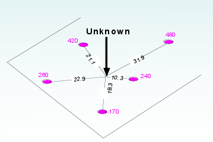
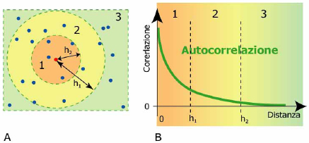
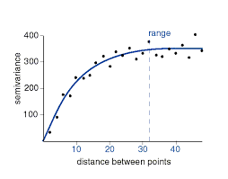

Geostatistica¶
La geostatistica è quella branca della statistica che si occupa dell’analisi e interpretazione di dati geografici.
- Come varia una variabile nello spazio?
- Che cosa controlla la sua variazione nello spazio?
- Quali e quanti campioni sono necessari per descrivere la sua variabilità spaziale?
- Qual è il valore della variabile in una specifica posizione (predizione)?
- Qual è l’incertezza di questa stima?
Sono dovuti passare molti anni prima che la geostatistica venisse applicata anche ad altri settore oltre a quello di esplorazione mineraria e petrolifera
- rappresentazione matematica complessa
- nessun sotware GIS fino agli anni ‘90
- costi dei software molto elevati
L’ambiente è un dominio continuo nelle tre dimensioni e possiamo tentare di effettuare misure solamente in un numero finito di siti. Quindi la cosa che possiamo far è stimare e dare delle stime di previsione.
Autocorrelazione spaziale¶
La prima legge di Tobler dice che tutto è in relazione con tutto, ma oggetti vicini sono più simili di oggetti lontani. Quindi l’autocorrelazione ci permette di capire una dipendenza spaziale fra le osservazioni. I valori delle proprietà ambientali ad una certa scala sono positivamente relazionati (autocorrelati). Punti vicini tra di loro tendono a valori simili, mentre punti lontani differiscono, in media, in misura maggiore.
La posizione del campione misurato è importante tanto quanto il valore stesso
Variogramma e semivariogramma¶
Nell’analisi spaziale possiamo immaginarci un grafico dove ogni punto, oltre ad avere delle coordinate, ha anche il valore di una variabile (quota, concentrazione di inquinante, porosità del terreno, ecc...).
Come già visto, punti vicini (in media) hanno valori più simili. Posso fissare un raggio di ricerca intorno ai punti e andare a calcolare la semi varianza fra i valori dei punti. Il grafico che otterrò è chiamato semi variogramma: ogni punto rappresenta la sommatoria della semi varianza a certe distanze.
Si vede come la semi varianza aumenti con la distanza, finché non raggiunte un limite in cui non cambia più. Questo valore ci permette di capire qual è la distanza massima entro cui i punti hanno un comportamento simile.